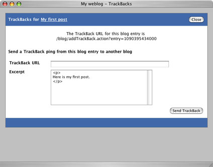

|
TrackBacks (definition) are another mechanism for visitors to leave feedback on your blog. Where comments are responses that are left on your blog, TrackBacks are effectively links back to responses that somebody has written on their website.
As with comments, the number of TrackBacks that have been received for a particular blog entry is shown underneath the entry. Clicking the TrackBacks[x] link will open a popup window to display all TrackBacks for that blog entry.
If for any reason you wish to remove a TrackBack, just click the Remove link underneath the appropriate TrackBack and click OK when asked for confirmation. Like the other admin features, this link will only show up if you have logged in.
Sending TrackBacks
In addition to receiving TrackBacks, Pebble can also send a TrackBack to another TrackBack-enabled blog. To send a TrackBack, locate the blog entry that you wish to send the TrackBack from and open the TrackBacks window for that blog entry. If you are logged in, you will additionally see a form from which you can send a TrackBack to another blog.
If a blog supports TrackBacks, it will provide you with a URL to which they should be sent. When you have this URL for the particular entry you wish to send the TrackBack to, just type it into the TrackBack URL textfield. In addition to a link back to your blog entry, a short excerpt describing/summarizing your blog entry is sent and can be edited as necessary before being sent.
|